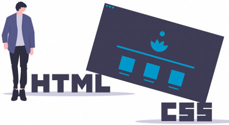

Site statique

La maison des ligues de Lorraine (M2L) souhaite disposer d’un site statique (simples pages HTML/CSS, sans connexion à une base de données) pour présenter ses activités, ses ressources et ses ligues. Nous sommes contactés pour réaliser cette mission.